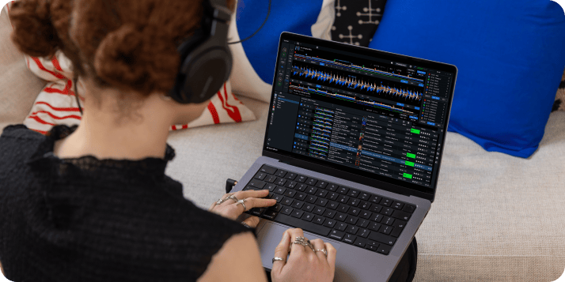
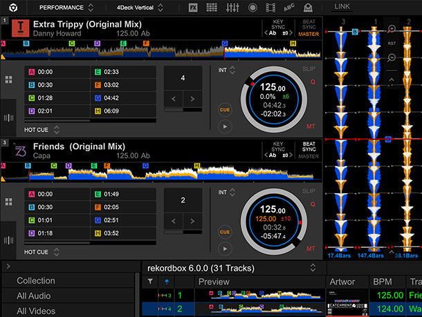

每周一套 DJ set，从搜歌到导出我只开 rekordbox
以前准备一套要两天：各处找歌手动数 BPM、标 cue 点、现场前一晚熬夜导 U 盘。现在一条链走完，讲 rekordbox 怎么把散活串成一条可复用的工作流。
我以前怎么"准备一套 set"——说多了都是泪
每周六晚上有个固定场，从一百首候选里挑出十五首拼成一套 45 分钟的 set。这个活我断断续续干了三年，前两年全是土方法：
- 歌散在三处：Apple Music 订阅里攒了 80%、朋友分享的 Dropbox 文件夹、自己 2TB 硬盘里压了 5 年的老歌。每次开工先开三个窗口手动拖。
- BPM 全靠耳朵数。节拍器 app 开着放，一首一首点，80 首候选数下来眼都花了。调性更别说，靠感觉接歌，现场撞 Key 是家常便饭。
- Cue 点、接歌位置全记在 Notion 表格里——"第 7 首 Outro 倒数 8 小节接第 8 首 Intro"，写着写着自己都忘了记的是哪个版本。
- 导出 U 盘是噩梦。俱乐部的 CDJ-3000 吃 FAT32、朋友的 XDJ-RX3 插同一个盘有时候读不出播放列表，换格式重来，反复好几次。
现在整条链就靠它撑着
我第一次逛rekordbox官网是 2023 年底，当时还只当是 Pioneer 的配套软件，没想着能把上面这些碎活全收进去。用了三个月后发现，rekordbox 真正的价值不是"打碟软件"，而是把一套 DJ 工作流里每一步的产物都留在同一个曲库里——歌进来、分析完、排好序、导出去、现场打完再把历史拉回来，中间零手工搬运。
整条链的关键节点是这样的：
- 歌源统一进库：流媒体订阅（Apple Music、Beatport Streaming）直接在软件里搜，本地文件夹拖进去，Dropbox 里朋友发的那批用同步脚本先落到本地再导入——最终所有候选都在一个曲库里，不用切窗口。
- 自动分析一次跑完：BPM、调性、乐句条、人声位置全交给软件扫。云端分析快的话几百首歌十几分钟搞定，本地慢的时候放后台一晚上第二天看结果。
- PREP 模式排歌单：按调性排个序，乐句条一开，哪首 Intro 在哪段、Outro 剩多少、哪首有人声哪段是纯伴奏，波形上清清楚楚——接歌点直接在波形上打 Cue，不用再开 Notion。
- 一键导 U 盘：插上盘选播放列表，软件自动按机型格式导出，新旧两代机器的库同时写进去，插哪台都能读。

两个最容易断的环节——我踩过的坑
这条链跑通不难，但有两个点我栽过好几次，不提前防着就得返工。
环节一：U 盘格式不对，现场读不出
第一次带新盘去俱乐部，CDJ-3000 直接显示"设备库为空"——我在软件里明明看得到播放列表。排了十分钟才搞明白：新盘默认是 GPT 分区表，老机型不认。重新格式化成 MBR + exFAT，回去重导，才来得及赶上开场。
更隐蔽的坑是新旧曲库格式的问题。软件从官方下载更新到 7.2.11 以上，导出时会同时写 Device Library 和 OneLibrary 两种格式到同一支 U 盘，因为新一代机型（CDJ-3000X、XDJ-AZ、OPUS-QUAD）读 OneLibrary，老机型读 Device Library。但如果你用旧版本软件导出的盘、再用新版本打开软件里又没重导，会出现"设备库不一致"的提示——多数时候直接整盘重导就完事，不要抠搜索差异。
排障的核心路径是固定的：分区表 → 格式 → 有没有导出中途拔盘 → 换根线换个口。按顺序走，大概率三五分钟能定位。记不清格式要求时去rekordbox文档翻一下，Device Library 和 OneLibrary 章节讲得很细。
环节二：Apple Music 曲目突然不放
上个月在现场切一首 Apple Music 里的歌，网格出来了但点播放没声音。查了一圈才发现是 Mac 系统设置里的「允许露骨内容」不知道什么时候被关了——系统层禁了，rekorbox 里的开关开着也白搭。还有官方提过 Apple Music 加载机制变更会造成网格和 Cue 点偏移，这种情况重新分析一遍曲目就行，别手动一个个重打。
另外，连接控制器时先换数据线、再升级固件、最后重装驱动——这三步走完，十有八九能解决识别异常。

效果和边界——什么时候这条链不划算
量化一下省了多少事：以前 80 首候选要手动数 BPM，现在分析全自动；以前接歌点记 Notion，现在波形上直接打 Cue、人声位置一眼看得到——少了大概三分之一的手动操作。最值钱的不是时间，是不用重复犯错：以前换格式、换分区表的坑踩过一次就不想再踩，现在流程固定下来，导出这步我敢放开场前半小时才做，稳得很。
但这套流程不是万能的。临时接个 10 首歌的暖场 set，用 rekorbox 反而显得重——直接拿手机接蓝牙或者用 VirtualDJ 快速拖一拖更划算。还有只用流媒体订阅、本地没有一首歌的纯新手，自动分析的价值也没那么大，因为没积累到一定量的曲库就体会不到统一管理的好处。
一句话总结：如果你有至少一两千首歌要管、每个月至少准备两套 set，rekorbox 值得你花一个周末把这条工作流走一遍；如果你只是偶尔打个十分钟的 open deck，那它的功能用不到十分之一。
这套曲目分析、USB 导出、PERFORMANCE 打碟的完整方案，我同步到了三个仓库，方便不同环境的朋友取用：GitHub 上有完整的安卓版目录，Gitee 适合国内访问，GitCode 作为额外备份。